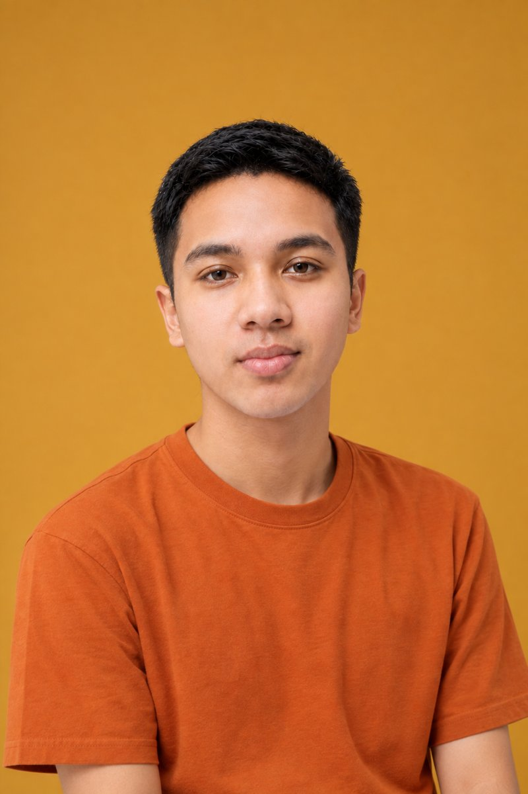

Saya lulusan S1 Informatika dengan latar belakang SMK Multimedia. Awalnya saya banyak belajar tentang desain dan multimedia, kemudian mulai tertarik dengan pemrograman dan pengembangan aplikasi, terutama backend.
Saya senang mencoba hal baru, membuat project, dan mengikuti lomba untuk menambah pengalaman. Sampai sekarang saya masih menikmati dunia desain, sekaligus terus belajar di bidang programming dan teknologi. Saya terbuka untuk belajar hal baru dan mendapatkan pengalaman di dunia kerja.
Terbuka untuk belajar hal baru dan pengalaman di dunia kerja.